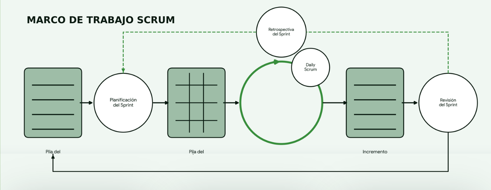
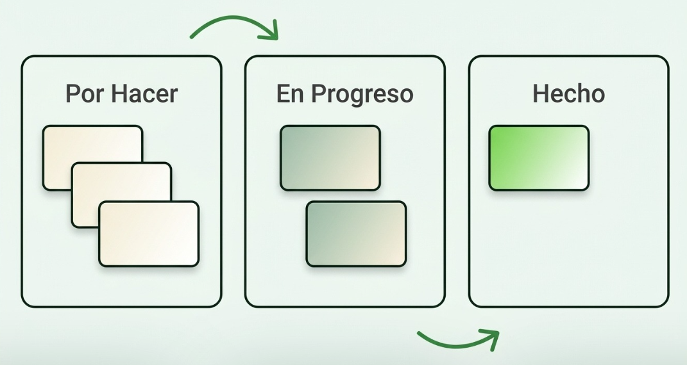
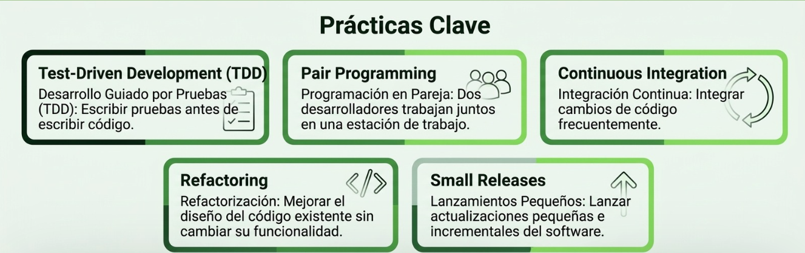

METODOLOGÍAS ÁGILES
Las metodologías ágiles permiten organizar el desarrollo de software de manera flexible, colaborativa y adaptable a los cambios. En esta sección vas a conocer Scrum, Kanban y Extreme Programming (XP), junto con sus principios y prácticas principales.
MANIFIESTO ÁGIL: SUS VALORES Y PRINCIPIOS
PERSONAS E INTERACCIONES
Se prioriza la comunicación y colaboración entre las personas sobre los procesos y herramientas.
Detalle: La interacción constante en el equipo resuelve problemas más rápido que depender únicamente de procesos rígidos o herramientas complejas.
SOFTWARE FUNCIONANDO
Se valora obtener resultados funcionales por encima de la documentación exhaustiva.
Detalle: La documentación es útil, pero la prueba definitiva de progreso es entregar versiones de software funcionales que aporten valor real.
COLABORACIÓN CON EL CLIENTE
Se trabaja en conjunto para lograr un producto útil por encima de la negociación contractual.
Detalle: Trabajar en alianza estrecha con el cliente permite alinear el producto final con las necesidades cambiantes en tiempo real.
RESPUESTA AL CAMBIO
Se busca adaptar el desarrollo a nuevas necesidades por encima de seguir un plan estricto.
Detalle: La agilidad abraza los cambios como oportunidades de mejora en lugar de verlos como imprevistos u obstáculos.
LOS 12 PRINCIPIOS DEL MANIFIESTO ÁGIL
Scrum:
Scrum organiza el trabajo en períodos llamados sprints, durante los cuales el equipo busca alcanzar un objetivo y producir un incremento del producto.
MARCO DE TRABAJO SCRUM

Scrum Master: Es el encargado de organizar el trabajo del equipo, coordinar las reuniones, mantener actualizado el tablero de tareas y ayudar a resolver obstáculos.
Diseñador / Product Owner: Define la visión del producto, prioriza los elementos del Backlog y asegura que el equipo entregue valor al cliente.
Programador / Equipo de Desarrollo: Desarrolla la estructura y las funcionalidades del sitio web transformando los requisitos en incrementos funcionales.
Tester / QA: Comprueba la calidad del software mediante pruebas para detectar errores de funcionamiento y problemas de diseño.
Sprint Planning: Reunión inicial donde se define el objetivo del Sprint y se seleccionan las tareas a desarrollar.
Daily Scrum: Reunión diaria de 15 minutos para sincronizar actividades y detectar bloqueos.
Sprint Review: Demostración del incremento terminado a los interesados al final del Sprint.
Sprint Retrospective: Evaluación interna del equipo para identificar mejoras en el proceso de trabajo.
Product Backlog: Lista priorizada de todas las características, funciones y requisitos del proyecto.
Sprint Backlog: Conjunto de elementos del Product Backlog seleccionados para ser completados en el Sprint actual.
Incremento: La suma de todos los elementos completados durante un Sprint que cumplen la definición de "Hecho".
Kanban:
Kanban es un método de gestión visual que permite organizar tareas, conocer su estado y detectar dificultades en el flujo de trabajo.

Kanban no impone roles rígidos predefinidos; cada miembro del equipo asume responsabilidades según el flujo de trabajo.
Reuniones de Cadencia: Revisiones del flujo de trabajo y reuniones diarias de stand-up para analizar el estado de las tarjetas en el tablero.
Tablero Kanban: Herramienta visual dividida en columnas (Por Hacer, En Proceso, Hecho) que refleja el estado real del trabajo.
Límites WIP: Restricciones explícitas en el número máximo de tareas simultáneas por columna.
XP:
XP se enfoca en mejorar la calidad del software mediante prácticas técnicas, colaboración y retroalimentación frecuente.

Programadores: Responsables del diseño, pruebas y desarrollo en parejas.
Cliente en sitio: Integrante del equipo encargado de definir los requisitos y validar los avances diariamente.
Coach: Guía al equipo en el cumplimiento de las prácticas técnicas XP.
Juego de la Planificación: Definición de lanzamientos e iteraciones entre el cliente y el equipo técnico.
Stand-up Meeting: Breve reunión diaria para coordinar el trabajo en pareja.
Historias de Usuario: Tarjetas breves escritas por el cliente que describen la funcionalidad esperada.
Pruebas Automatizadas: Conjunto de tests que garantizan que el código no sufra regresiones.
SCRUM A PROFUNDIDAD
Pila de producto
Click para ver más...
Pila del sprint
Click para ver más...
Sprint
Click para ver más...
Scrum diario
Click para ver más...
Retrospectiva del sprint
Click para ver más...
KANBAN A PROFUNDIDAD
POR HACER
EN PROCESO
HECHO
ESTADO DEL TRABAJO
Arrastra y suelta cualquiera de las tarjetas (Diseño, Programación, Pruebas) entre las columnas para cambiar su estado en el flujo de trabajo.